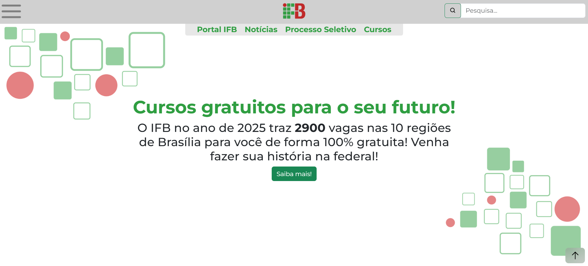

Desenvolvimento de Plataformas Web:Redesign do Portal IFB
Resumo
Este trabalho diagnostica a usabilidade e acessibilidade do portal do IFB, identificando falhas críticas através de análise heurística e das diretrizes WCAG. Em resposta, um protótipo funcional foi desenvolvido para modernizar a interface, otimizar a navegação e promover a inclusão digital. A positiva aceitação do protótipo pela comunidade acadêmica valida a proposta como uma solução viável e necessária para a comunicação institucional.
Objetivos
- Analisar os pontos fortes e as fragilidades do portal do IFB.
- Diagnosticar usabilidade e acessibilidade.
- Propor recomendações para otimização.
- Desenvolver um protótipo funcional.
- Validar a proposta com a comunidade acadêmica.
Metodologia
Este estudo realizou um diagnóstico do portal atual do IFB e desenvolveu um protótipo aprimorado. A primeira fase envolveu uma análise crítica da usabilidade. Na segunda fase, os problemas identificados serviram como base para o redesenho da interface e da arquitetura da informação na plataforma Figma, seguindo os princípios do Design Centrado no Usuário. Por fim, foi desenvolvido um protótipo funcional e responsivo utilizando HTML5, CSS3 com Bootstrap e JavaScript, com o objetivo de solucionar as falhas encontradas.
Detalhes do Projeto
-
Coordenador(a):
Dr. Dauster Souza -
Equipe:
Davi Rocha, Fernando Fábio -
Status:
Finalizado -
Palavras-chave:
IFB usabilidade acessibilidade design responsivo comunicação institucional